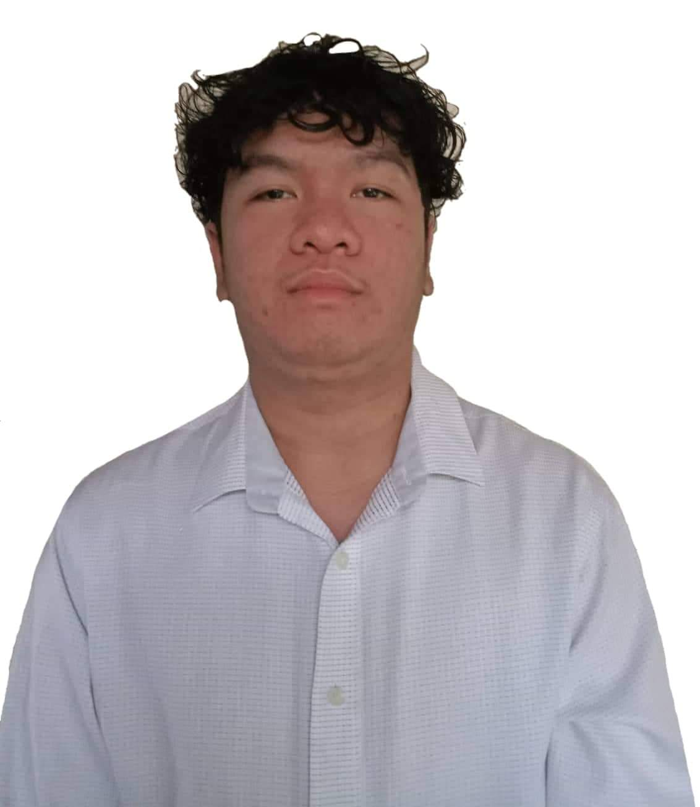

Background
My name is Cyruz Steven C. Manza, I live in San Marcos,San Pablo City.I'm
currently in 3rd year in Pamantasan Lungsod ng San Pablo and my program is
Bachelor of Science in Information Technology and then my major is Web and
Game Development.I want to be an Front-End Developer someday.Why I choose BSIT?
to be honest this is my second option and my first option is to become an Army but here
i am and i want to learn some technology and prog languages and expand my knowledges.I
learn some knowledges in html, css, c++, java, mysql,networking and on my journey in college life
i also enjoy the human computer interaction like interfaces and design our application(sketching,wireframe,prototypes etc).